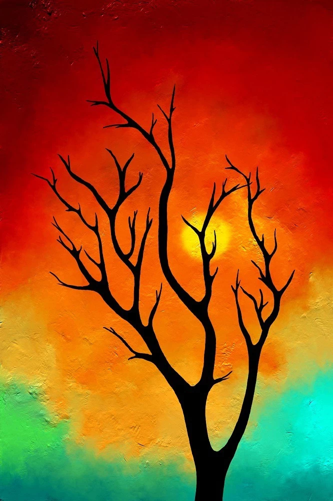

The Enigma of the Ebony Tree: Unraveling the Symbolism in Anya Volkov's Latest Masterpiece
Anya Volkov, the enigmatic Russian artist known for her evocative landscapes, has once again captivated the art world with her latest work, "Twilight Grove." The painting, a mesmerizing depiction of a solitary black tree silhouetted against a fiery sunset, has sparked intense discussion among critics and art enthusiasts alike. The focal point of the painting, the ebony tree, stands tall and imposing, its branches reaching towards the sky like gnarled fingers. The tree's dark silhouette contrasts starkly with the vibrant hues of the sunset, creating a sense of mystery and foreboding. Volkov is known for her masterful use of symbolism, and "Twilight Grove" is no exception. The black tree, a recurring motif in her work, is often interpreted as a representation of the unconscious, the unknown, or the shadow self. It can also symbolize resilience, strength, and the ability to withstand adversity. Some art historians suggest that the black tree in "Twilight Grove" may hold a deeper meaning, perhaps alluding to a hidden secret or a dark truth. They point to the tree's gnarled branches, which seem to clutch at the sky as if trying to grasp something just out of reach. Volkov herself remains tight-lipped about the painting's true meaning, preferring to let viewers interpret it for themselves. "Art is a mirror to the soul," she says. "It reflects our deepest fears and desires, our hopes and dreams. The black tree is a symbol of all that is hidden within us, waiting to be discovered." Whether you see the black tree as a symbol of darkness or resilience, one thing is certain: "Twilight Grove" is a masterpiece that will continue to intrigue and inspire for generations to come. Perhaps, like all great art, it holds a hidden message, a secret waiting to be unlocked by those who dare to look closer.